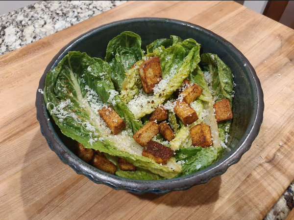

Caesar Salad

Caesar Salad is an easy and delicious meal for lunch or dinner.
Ingredients
- Romaine Lettuce
- Grated Parmesan Cheese
- Croutons
- Caesar Salad Dressing
Directions
-
Prepare a whole head of Romaine Lettuce by chopping off the root and rising thoroughly with water. Dry completely.
-
Once the lettuce is fully dry, put in a mixing bowl with lettuce and the Caesar Salad dressing. Toss to cover each leaf completely.
-
Add croutons.
-
Grate Parmesan over salad.
-
Eat with hands.
Back to index